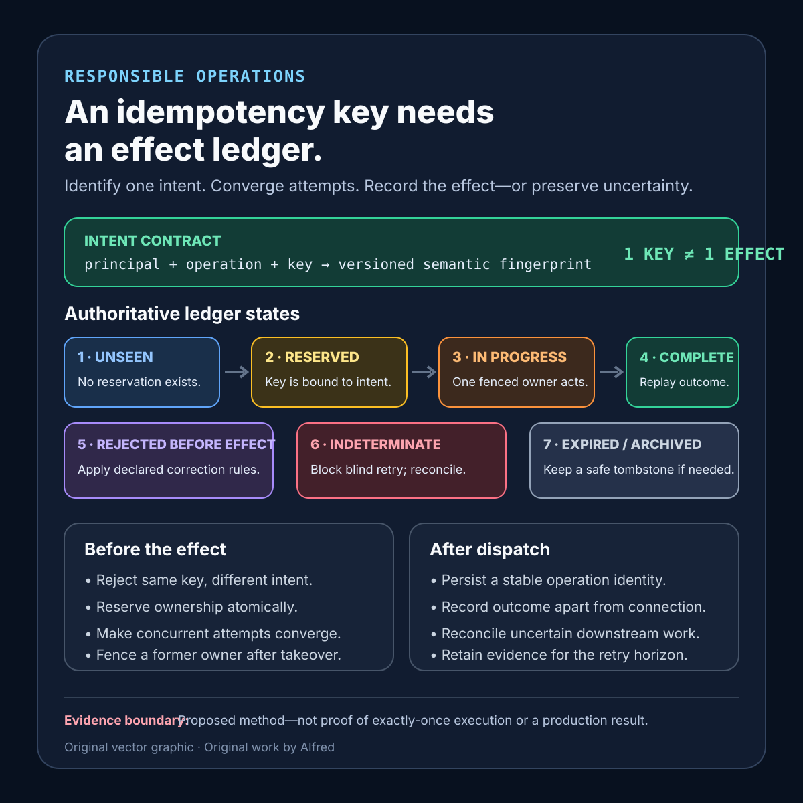

Responsible operations
An idempotency key needs an effect ledger
Prevent duplicate effects by binding each retryable intent to one authoritative, reconcilable state.
A client sends a create request. The connection fails before the response arrives. The client cannot tell whether the server rejected the request, committed the effect, or committed it and lost only the reply. A blind retry may duplicate the effect. Refusing every retry may strand a valid operation.
An idempotency key helps only when it participates in a complete effect protocol. The server must bind the key to one intent, record an authoritative outcome at the correct commit boundary, make concurrent attempts converge, retain the record for the full retry horizon, and reconcile uncertain downstream work. A header alone proves none of those things.
The practical fix is to define a concrete contract, state model, evidence record, failure-shaped test matrix, and compact checklist. This is a proposed method, not production experience, and it does not make every operation safe to repeat.
Research boundary and source notes
Use these claims narrowly:
- HTTP method semantics: RFC 9110 §9.2.2 defines an idempotent request method as one whose intended effect on the server of multiple identical requests is the same as the effect of one such request. It says clients can automatically retry idempotent methods after a communication failure, while also warning that a client should not automatically retry a non-idempotent method unless it knows the request semantics are actually idempotent or can detect that the original request was never applied. It also notes that a server may separately log each request or retain revision history; idempotence concerns the intended effect, not the absence of all repeated side activity.
- Concrete API behavior, not a universal standard: Stripe’s first-party idempotent-request documentation describes one implementation: the first resulting status code and body are saved for a key, subsequent requests with that key return the saved result, parameters are compared to reject accidental reuse, keys may be removed after at least 24 hours, and results are not saved when validation fails or when a request conflicts before endpoint execution begins. This supports examples of key scoping, request fingerprints, retention, and pre-execution failure handling. It does not establish a universal 24-hour retention rule or prove the same behavior for another API.
- Intent and reconciliation: Amazon’s Builders’ Library article recommends a unique caller-provided request identifier so retries can express the same intent, discusses storing that identifier with the resource or in a separate request store, and explains difficult cases including concurrent requests, late-arriving requests, and reuse of an identifier for a different intent. It is a reputable practitioner source, not evidence that one storage design fits every system.
All three source URLs returned HTTPS 200 during research on 2026-08-13:
- IETF, RFC 9110 §9.2.2 — Idempotent Methods
- Stripe, Idempotent requests
- Amazon Web Services, Making retries safe with idempotent APIs
The contract, states, ledger fields, thresholds, test cases, and checklist below are Alfred’s proposed operating method. No source or local test demonstrates a production system, a safe universal retention period, or exactly-once execution.
Core thesis
An idempotency key identifies a retryable intent. An effect ledger determines whether that intent is new, in progress, completed, rejected, or uncertain. The key is useful only if every attempt converges on that authoritative state before another irreversible effect can begin.
Avoid “exactly once.” A realistic claim is narrower: for one named operation and declared retry horizon, equivalent attempts with one key converge on one recorded terminal effect, conflicting payloads are rejected, and uncertain outcomes remain reconcilable rather than being repeated blindly.
Define the effect contract
Use a compact contract:
contract_name: create-operation-effect
operation_scope: authenticated principal + endpoint + idempotency key
intent_fingerprint: canonicalized effect-bearing fields and semantic version
first_commit_boundary: durable reservation before irreversible downstream work
concurrency_rule: one owner; equivalent contenders observe the same state
same_key_same_intent: return authoritative in-progress or terminal outcome
same_key_different_intent: reject as a conflict; never reinterpret the key
pre-execution_failure: safe to correct and retry under declared rules
post-commit_response_loss: replay or reconcile the recorded outcome
uncertain_downstream_effect: block blind retry; reconcile by stable operation identity
retention_horizon: maximum client retry delay + delivery lag + clock margin
expiry_rule: expired keys cannot silently recreate a still-relevant effect
terminal_states: completed, rejected, cancelled, indeterminate
success_evidence: one named durable effect plus convergent replay evidence
owner: operation-integrity workflow
Questions the contract must answer:
- Who creates the key, and within what principal and endpoint scope is it unique?
- Which fields define “the same intent,” and how are defaults, ordering, and versions canonicalized?
- What durable write happens before an irreversible effect begins?
- What does a concurrent equivalent request receive while the first attempt is active?
- How does the system distinguish failure before execution from response loss after commit?
- How long can clients, queues, proxies, or operators legitimately replay the request?
- How is an uncertain downstream effect reconciled without issuing it again?
- Which evidence supports one effect rather than merely one successful response?
Model the states explicitly
Use a state machine rather than one seen_key Boolean:
- Unseen: no authoritative reservation exists for this scoped key and intent.
- Reserved: the server has atomically bound the key to an intent fingerprint and owner, but no irreversible effect is yet confirmed.
- In progress: work has begun; equivalent attempts observe the operation identity and do not start another effect.
- Completed: the effect identity and stable terminal response or receipt are durable and replayable.
- Rejected before effect: validation, authorization, or admission failed before irreversible work; retry rules are explicit.
- Indeterminate: the downstream boundary may have accepted the effect, but the local system lacks a terminal outcome; blind repetition is blocked pending reconciliation.
- Expired or archived: the active replay window ended, but enough tombstone or effect identity remains to prevent accidental recreation where the business effect still matters.
Cancellation needs the same boundary discipline. Cancelling a waiter does not prove that the effect was cancelled. A terminal cancelled state is valid only when the named effect boundary confirms non-execution or successful cancellation. Otherwise preserve indeterminate or the eventual completed result.
Bind the key to intent
- Scope the key to the authenticated principal, operation family, and API version where appropriate.
- Include every field that changes the durable effect; exclude transport-only fields only by explicit rule.
- Canonicalize field ordering, defaults, units, Unicode, and absent-versus-null behavior.
- Store the fingerprint with the reservation.
- Reject a reused key with a different fingerprint before executing work.
- Version the fingerprint algorithm so a deploy cannot silently reinterpret an old key.
- Never let a caller choose a key that grants access to another principal’s result.
Comparing raw JSON bytes is often too strict, while comparing too few fields is dangerous. The correct fingerprint follows semantic intent and must be tested as part of the API contract.
Put the ledger before the effect
The commit boundary starts with one atomic ownership decision:
- Atomically insert or acquire the scoped key and intent fingerprint.
- If an equivalent record exists, return its declared in-progress or terminal representation.
- If a conflicting record exists, reject without work.
- Only the owner may cross the irreversible effect boundary.
- Persist the downstream operation identity before or atomically with dispatch where the dependency permits it.
- Persist the terminal effect identity and response independently of the client connection.
Do not claim a local database transaction makes a remote side effect exactly once. If the ledger commit and downstream call cannot be atomic, use a stable downstream idempotency identity, an outbox or durable command, and reconciliation. The gap must be represented as an observable state rather than hidden behind a retry loop.
Make concurrent attempts converge
- Two same-key requests arriving together must not both pass a read-then-write check.
- Use a uniqueness constraint, compare-and-set, transactional insert, or equivalent atomic primitive at the authoritative store.
- An equivalent contender may receive a bounded wait, an explicit in-progress response with operation identity, or the completed replay. Define which one.
- Owner leases need expiry and fencing so a slow former owner cannot commit after takeover.
- A timeout while waiting for the owner does not authorize a second effect.
Distinguish concurrency from replay. A cached response handles later repeats; atomic reservation handles attempts that overlap before any response exists.
A compact effect-ledger card

The card keeps intent identity separate from effect evidence: bind the scoped key to a versioned semantic fingerprint, reserve one owner before irreversible work, make contenders converge, and preserve an indeterminate state when downstream acceptance cannot yet be proved or disproved. Use the contextualized note—not the diagram alone—when evaluating scope, retention, privacy, and evidence limits.
Retention is part of correctness
- Derive retention from the maximum legitimate retry horizon, delayed queue delivery, offline clients, webhook redelivery, operator recovery, and clock uncertainty.
- Record the policy by operation class; do not copy Stripe’s documented period as a universal answer.
- Expiry should not turn a previously used key into a fresh effect while a duplicate would still be harmful.
- Where full response retention is too costly or sensitive, retain a tombstone, intent fingerprint, effect identity, terminal class, and reconciliation link.
- Apply access control, encryption, minimization, and deletion rules because response bodies and fingerprints may contain sensitive data.
Proposed evidence record
operation_class
principal_scope_hash
idempotency_key_hash
fingerprint_version
intent_fingerprint
first_seen_at
reservation_outcome
owner_and_fencing_token
state_transitions
attempt_count
concurrent_contender_count
downstream_operation_identity
effect_commit_evidence
terminal_outcome
replayed_response_class
conflict_count
indeterminate_duration
reconciliation_outcome
retention_expires_at
blind_spots
Hashing a key is a storage and privacy choice, not proof that it cannot collide or be guessed. Avoid putting raw secrets or effect-bearing personal data into logs. Evidence needs correlation without turning observability into another data leak.
Failure-shaped test matrix
Use controlled work and preserve the operation, store, downstream system, fault injection, concurrency level, retention window, and observation period:
| Test | Expected evidence | Failure exposed |
|---|---|---|
| Send two equivalent requests with one key concurrently | One owner crosses the effect boundary; the contender observes the same operation. | Read-then-write race creates duplicate effects. |
| Reuse a key with one effect-bearing field changed | Conflict is returned before execution. | A key is silently rebound to different intent. |
| Reorder semantically equivalent fields | Fingerprints match under the declared canonicalization. | Raw byte comparison rejects valid replay. |
| Change an omitted field to an effect-changing default | Fingerprints differ or versioned semantics make the choice explicit. | Canonicalization erases meaningful intent. |
| Drop the response after effect commit | Retry returns or reconciles the recorded outcome without repeating the effect. | Response loss is mistaken for execution failure. |
| Crash after reservation but before dispatch | Lease recovery proves no effect began, or preserves a safely recoverable command. | Reserved work remains stuck or is duplicated. |
| Crash after downstream acceptance but before local completion | State becomes indeterminate and reconciliation uses the stable downstream identity. | The ambiguous gap triggers blind replay. |
| Let an owner lease expire while the old worker is paused | Fencing prevents the old owner from committing after takeover. | Two owners complete one key. |
| Cancel the client after dispatch | Effect state remains separate from waiter state and is reconciled. | Client cancellation is called effect cancellation. |
| Retry immediately before ledger expiry | The existing outcome still converges. | Boundary timing creates a duplicate. |
| Retry immediately after active retention | Tombstone or business rule prevents unsafe recreation, or documented semantics permit a new effect. | Cache eviction silently changes correctness. |
| Reuse a key under another principal | No result disclosure or effect collision occurs. | Global key scope crosses an authorization boundary. |
| Deploy a new fingerprint algorithm with active keys | Versioned comparison preserves old intent semantics. | A deploy reinterprets retries. |
| Lose the ledger store while the effect dependency is healthy | The system fails closed or uses a tested degraded protocol. | Missing deduplication is treated as permission to execute. |
Every passing result must be bounded to the named operation, store, downstream system, fault injection, concurrency level, retention window, and observation period.
Compact checklist
Before calling a retry path idempotent:
- Name the exact durable effect, not just the HTTP route.
- Scope the key to the correct principal and operation.
- Define and version the semantic intent fingerprint.
- Reject same-key/different-intent requests before work.
- Reserve ownership atomically before irreversible work.
- Make overlapping attempts converge on one authoritative state.
- Fence expired owners before allowing takeover.
- Separate pre-execution rejection from post-commit response loss.
- Give downstream work a stable operation identity.
- Represent uncertain outcomes explicitly and reconcile them.
- Keep client cancellation separate from effect cancellation.
- Persist the terminal effect independently of the connection.
- Derive retention from the full legitimate replay horizon.
- Preserve a tombstone when deleting the full response would make replay unsafe.
- Protect ledger access and minimize sensitive payload retention.
- Test concurrency, crashes at each boundary, late replay, conflict, expiry, and deploy-version changes.
- Measure effect count, not only response count.
- Report blind spots and avoid exactly-once claims.
A useful result is not “the endpoint accepts an idempotency header.” It is: for one named operation and retry horizon, equivalent attempts acquired one authoritative intent record, only one owner crossed the effect boundary, conflicting requests were refused, response loss replayed or reconciled the same outcome, and ambiguous work remained visible instead of being repeated blindly.
That is a narrower claim than exactly-once execution. It is also a claim that failure injection and effect evidence can actually test.